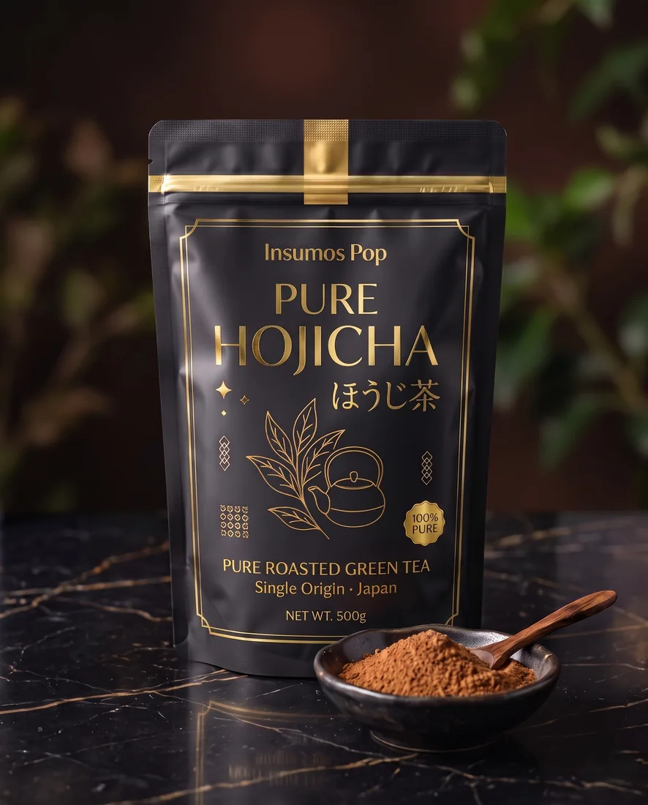

Polvos para bubble tea
Pure Hojicha 100% puro
ほうじ茶
Té verde tostado de Japón en su forma más pura, con apenas una fracción de la cafeína del matcha.
Ideal para: Cafeterías
Sobre este producto
El té verde tostado de Japón, en su forma más pura: hojas tostadas lentamente al fuego hasta despertar sus notas a caramelo, nuez y madera, con apenas una fracción de la cafeína del matcha.
Las empresas ganadoras ya lo saben: el hojicha es la próxima gran tendencia mundial, y casi nadie lo ofrece todavía en Colombia. Con nuestro hojicha puro, tu barista crea lattes y postres de autor con un sabor cálido e inconfundible, y tú te quedas con la moda que viene… antes que nadie.
¿Cuál hojicha te conviene?
Mezcla lista (Hojicha, $95.000 · 1 kg): lista para bebidas, servicio rápido y costo por vaso controlado.
100% puro (Pure Hojicha, $110.000 · 500 g): té tostado single origin de Japón para lattes y postres de autor.
¿Cuál pido? Si vendes volumen, la mezcla; si tu carta es de autor, el puro — o ambos.
Recetas con este producto
Especificaciones
| Presentación | Bolsa 500 g |
|---|---|
| Precio | $110.000 (IVA incluido) |
| Costo por gramo | Equivale a $220 por gramo: multiplica por tu dosis por vaso y obtienes tu costo de insumo por bebida. Si quieres, te ayudamos a calcularlo por WhatsApp. |
| Origen | Japón (single origin) |
| Nombre original | ほうじ茶 |
| Referencia (SKU) | IP-HOJP-500 |
| Conservación | Lugar fresco y seco, protegido de la luz y bien cerrado después de abrir. |
| Dosis y rendimiento | Dependen de tu receta y tamaño de vaso. Escríbenos por WhatsApp y te compartimos la ficha técnica y dosificación recomendada. |
Preguntas frecuentes
¿Tiene menos cafeína que el matcha?
Sí, el hojicha contiene una fracción de la cafeína del matcha, ideal para cartas de tarde y noche.
¿Viene endulzado?
No. Es té tostado 100% puro: tú defines leche, endulzante e intensidad.